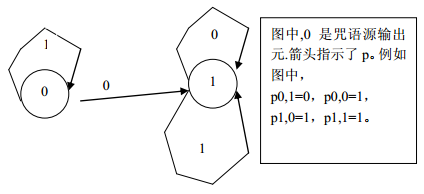

传说中，有个神奇的潘多拉宝盒。如果谁能打开，便可以拥有幸福、财富、爱情。可是直到真的打开，才发现与之相随的还有灾难、不幸。其实，在潘多拉制造这个宝盒的时候，设置了一些咒语来封锁住灾难与不幸。然而，直到科技高度发达的今天，人们才有希望弄懂这些咒语。所以说，上千年来，人们只得忍受着各种各样的疾病和死亡的痛苦。然而，人类的命运从此改变了。经过数十年的研究，NOI组织在最近终于弄清楚了潘多拉咒语的原理。
咒语是由一个叫做咒语机的机器产生的。用现在的名词来解释，咒语机其实就是一个二进制产生器，它产生的一个二进制字符串（这个字符串叫做咒语源）经加密后就形成了咒语。二进制产生器的结构是这样的：它由 $n$ 个元件组成，不妨设这 $n$ 个元件的标号为 $0$ 到 $n-1$。在每个时刻，都有且仅有一个信号，它停留在某个元件上。一个信号就是一个二进制字符串。最开始，有一个空串信号停留在元件 $0$ 上。在某个时刻，如果有一个信号 $s$ 停留在元件 $I$ 上，那么，这时元件 $i$ 可以将信号后面加一个 $0$，然后把信号传给元件 $p_{i,0}$，也可以将信号后面加一个 $1$，然后传给元件 $p_{i,1}$。也就是说，下一个时刻有可能，一种可能是一个信号 $S_0$（表示字串 $S$ 后面加一个 $0$ 形成的字串）仪在元件 $p_{i,0}$ 上，另一种可能是有一个信号 $S_1$ 停留在元件 $p_{i,1}$ 上。有的元件可以将停留在它上面的信号输出，而输出的信号就成为了咒语源，这样的元件叫做咒语源输出元。不难发现，有些口语源是可能由一个咒语机产生的，而另一些咒语源则不行。例如，下图的咒语机能产生 1,11,111,1111,... 等咒语源，但是不能产生 0,10,101 等咒语源。在这个盒子上，有 $K$ 个咒语机，不妨将这些咒语机从 $0$ 到 $K-1$ 标号。可能有这种情况，一个咒语机 $i$ 能够产生的口语源，咒语机 $j$ 都能产生。这时，我们称咒语机 $j$ 是咒语机 $i$ 的升级。而衡量这个例子的复杂程度的一种办法是：看这个盒子上升级次数最多的一个咒语机。即：找到一个最长的升级序列 $a_1,a_2...a_t$。该升级序列满足：序列中任意两个咒语机的标号都不同，且都是 $0$ 到 $k-1$（包含 $0$ 和 $k-1$）之间的整数，且咒语机 $a_2$ 是咒语机 $a_1$ 的升级，咒语机 $a_3$ 是咒语机 $a_2$ 的升级...，咒语机 $a_t$ 是咒语机 $a_{t-1}$ 的升级。你想远离灾难与不幸吗？你想从今以后沐浴幸福的阳光吗？请打开你的潘多拉之盒吧。不过在拱形它之前，你先得计算一下宝盒上最长的升级序列。

 Comet OJ
Comet OJ